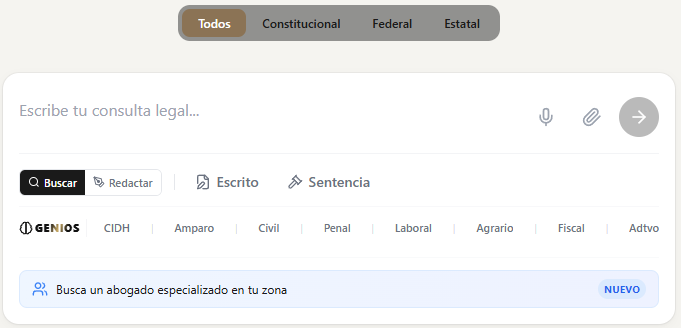
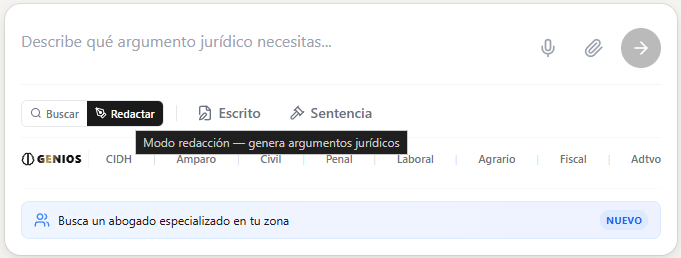

Descubre cómo los equipos legales de alto rendimiento integran la Arquitectura Multi-Genio de Iurexia para multiplicar su rentabilidad, reducir horas no facturables y entregar análisis de calado magistral sin incrementar personal.
"No buscamos automatizar al abogado, sino expandir drásticamente su capacidad operativa. Iurexia es la infraestructura que absorbe la complejidad normativa para que tú domines la estrategia del caso."
El nuevo entorno de Iurexia Pro está diseñado no como un simple buscador de leyes, sino como un ecosistema de flujos de trabajo (workflows). Desde esta cabina centralizas la inteligencia, la redacción especializada y el análisis documental profundo.

Vista principal: Redacción de documentos, Carga de expedientes y Selección Inteligente de Genios.
La capacidad de limitar el universo de búsqueda a un Estado de la República o exclusivamente al ámbito Federal elimina el "ruido" legal. Iurexia te entrega doctrina y jurisprudencia estrictamente vinculante al fuero de tu controversia.
Nuestra interfaz divide limpiamente el proceso: usa el modo Buscar para la concepción de teorías del caso, y el modo Redactar para materializar borradores formales y argumentaciones procesales.
El avance más revolucionario para estrategas legales complejos. Los problemas legales rara vez son aislados. La Arquitectura Multi-Genio te permite invocar simultáneamente a múltiples inteligencias jurídicas especializadas para auditar tu caso desde vértices distintos.

Genios Operando de Forma Simultánea: Cruzando Amparo, Derechos Humanos y Fiscal en tiempo real.
Activa, por ejemplo, el Genio Laboral y el Genio de Amparo en la misma consulta. Iurexia no solo responderá sobre derecho del trabajo, sino que someterá cada respuesta al escrutinio del control constitucional y las reglas del amparo directo.
Cuando cruzas especialidades, Iurexia prioriza el razonamiento jurídico. El modo de "Redacción General" se desactiva estratégicamente para obligar a la IA a entregarte auditorías de viabilidad y análisis dogmático puro en lugar de machotes superficiales.
El verdadero Retorno de Inversión (ROI) en despachos que manejan gran volumen ocurre cuando se acorta el tiempo de revisión humana en documentos masivos.
Sube resoluciones complejas de tribunales colegiados o juzgados de distrito. Iurexia audita de inmediato fallos procesales, faltas de exhaustividad y violaciones a derechos fundamentales.
Convierte 2 horas de revisión de pruebas o lectura de expedientes en 15 minutos de extracción precisa de datos. Permite a los Socios y Abogados Senior dedicar el 90% de su tiempo a perfeccionar la estrategia procesal y el trato con el cliente.
El secreto profesional no es opcional. Las firmas top exigen privacidad total.
Tus datos se quedan contigo.
Los análisis que conduces, los documentos que auditas y las estrategias que proyectas están
aislados (Data Privacy Shield). Iurexia JAMÁS utilizará el contenido
confidencial de tus casos o clientes para entrenar modelos de inteligencia artificial
compartidos. Ofrecemos un entorno blindado, diseñado para cumplir con los estándares éticos
y obligaciones de confidencialidad inherentes a la profesión jurídica en México.
Potencia tu destreza técnica. Escala tu firma.